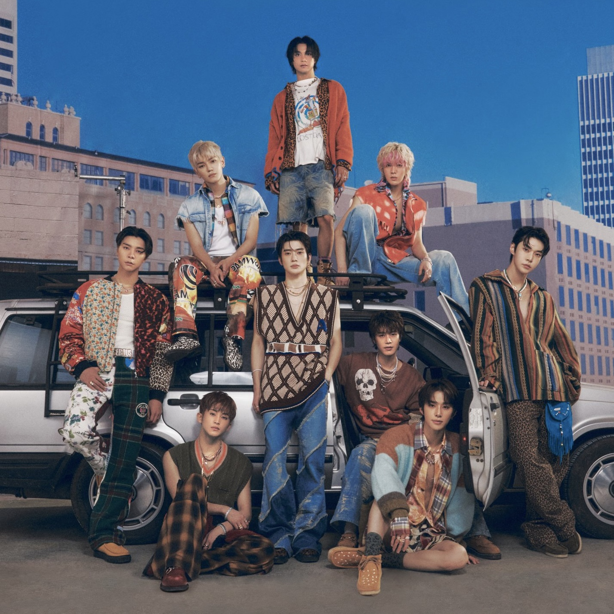
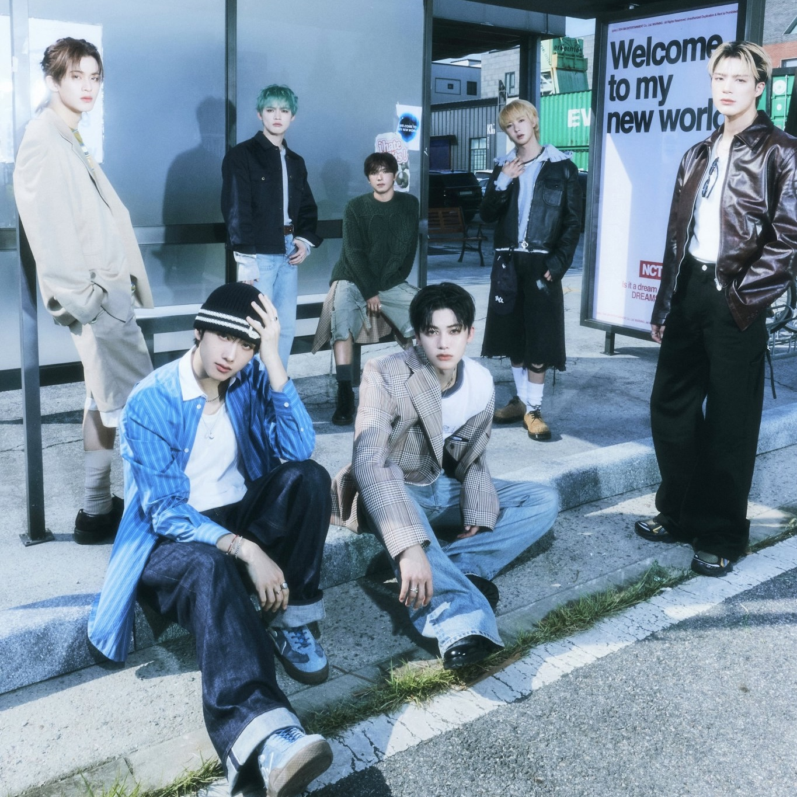
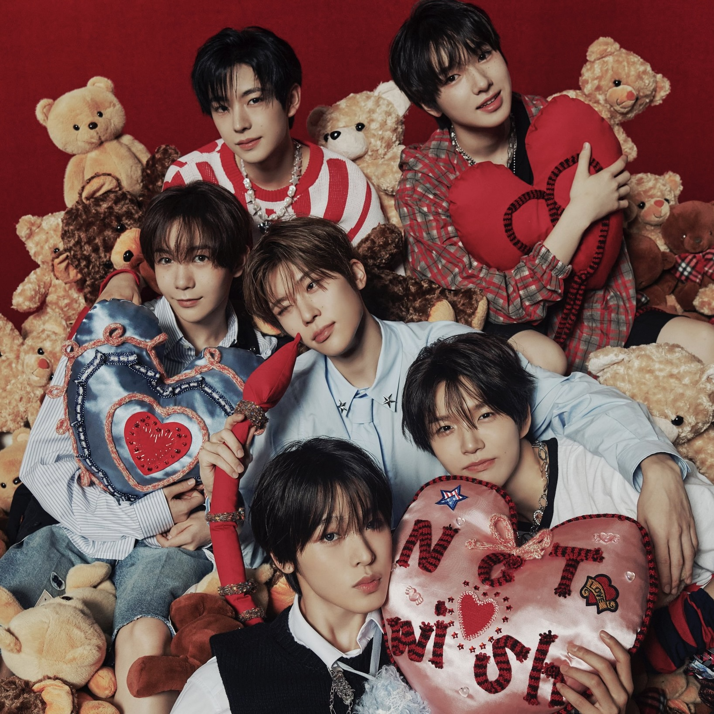

Neo Culture Technology (NCT), is a 25 member boy group under SM Entertainment. They are described as having an unlimited number of members and sub-units until late 2022 where it was announced that NCT 2021 would be the last sub-unit of NCT, and no more members would be joining. On May 10, 2023, SM Entertainment announced that Lucas had left the group and his sub-units but is still under SM. On May 24, 2023, SM Entertainment announced that Shotaro and Sungchan will be leaving NCT and their sub-units and debut in SM's new boy group RIIZE.
NCT U
NCT U is the first sub-unit of the boy group NCT. NCT U doesn’t have fixed members, meaning the lineup keeps changing for every comeback, OST or dance stage depending on who fits the concept of the song. NCT U debuted on April 9th, 2016 under SM Entertainment.

NCT 127
NCT 127 is the second sub-unit of the boy group NCT. The sub-unit consists of 9 members. NCT 127 debuted on July 7th, 2016 under SM Entertainment with an EP NCT#127.

NCT DREAM
NCT DREAM is the 3rd sub-unit of the boy group NCT under SM Entertainment. The sub-unit consists of 7 members. They debuted on August 25, 2016, with their first single, Chewing Gum. They made their Japanese debut on February 8, 2023, with their first single, Best Friend Ever.

WayV
WayV (WeiShen V) is the fourth sub-unit of NCT based in China, making WayV the first sub-unit in NCT based out of Korea, under SM Entertainment’s China-exclusive label, Label V. The sub-unit currently consists of 6 members. WayV debuted on January 17, 2019, with the single album “The Vision“. On May 10, SM Entertainment and Label V officially announced that Lucas would be parting ways with both NCT and WayV to pursue his individual endeavours. WayV will be making their Japanese debut on September 25, 2024.
NCT WISH
NCT WISH, formerly known as NCT New Team is the sixth sub-unit of the boy group NCT under SM Entertainment formed through the survival show NCT Universe : LASTART. The unit consists 6 members. They released a pre-debut single, Hands Up on October 19, 2023. They made their debut on February 21, 2024 with their first single, WISH.
